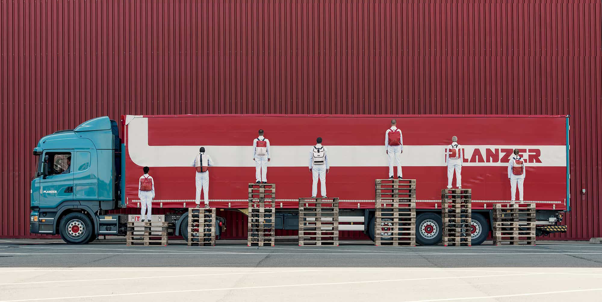

Transforming used truck tarps into highly functional, unique bags takes place in five highly complex stages at the F-actory. FREITAG bags are made from a combination of three raw materials: tarpaulin, which is the lungs of trucks, rubber tubes inside bicycle wheels, and seat belts in cars.
FROM TRUCK TILL BAG.